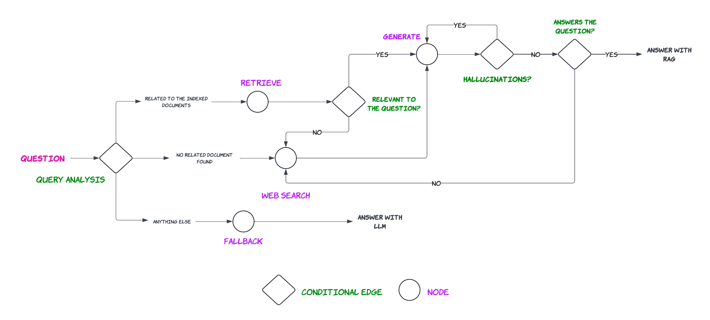

9. Generation II#
In this section we improve the previous CRAG implementation by adding “Query Analysis” as described in Self-RAG and Adaptive RAG papers, according to the following graph.
 |
|---|
Improved RAG pipeline with Query analysis and Self-RAG |
%load_ext dotenv
%dotenv secrets/secrets.env
from langchain.text_splitter import RecursiveCharacterTextSplitter
from langchain_community.document_loaders import WebBaseLoader
from langchain_community.vectorstores import Chroma
from langchain_openai import OpenAIEmbeddings
from langchain_openai import ChatOpenAI
from langchain.prompts import ChatPromptTemplate
from langchain import hub
from langchain_core.output_parsers import StrOutputParser
We start by creating our retriever to retrieve documents (documents about agents, prompt engineering, and adverserial attacks on llms) from the vectorstore.
urls = [
"https://lilianweng.github.io/posts/2023-06-23-agent/",
"https://lilianweng.github.io/posts/2023-03-15-prompt-engineering/",
"https://lilianweng.github.io/posts/2023-10-25-adv-attack-llm/",
]
docs = [WebBaseLoader(url).load() for url in urls]
docs_list = [item for sublist in docs for item in sublist]
text_splitter = RecursiveCharacterTextSplitter.from_tiktoken_encoder(
chunk_size=250, chunk_overlap=30
)
doc_splits = text_splitter.split_documents(docs_list)
# Add to vectorDB
vectorstore = Chroma.from_documents(
documents=doc_splits,
collection_name="rag-chroma",
embedding=OpenAIEmbeddings(),
)
retriever = vectorstore.as_retriever()
Then we create the chain that decides whether to redirect the user question to the vectorstore, or to do a web search or to fallback when the user asks a generic question.
from langchain.pydantic_v1 import BaseModel, Field
from typing import Literal
class QueryRouter(BaseModel):
"""Routes the user query to appropriate datasources. If the query can be answered using documents about either LLM agents, prompt engineering, or adverserial attacks on LLMs, returns 'vectorstore'. Otherwise returns 'web_serach'. If the query can be answered using LLM's internal knowledge, return 'fallback'"""
datasource: Literal["vectorstore", "web_search", "fallback"] = Field(...,
description="The datasource to use for answering the query. 'vectorstore' if the query is either related to LLM agents, prompt engineering, or adverserial attacks on LLMs \
'web_search' if the query is not related to the above topics and requires web search. 'fallback' if the query can be answered using LLM's internal knowledge")
llm = ChatOpenAI(model='gpt-4', temperature=0)
query_llm = llm.with_structured_output(QueryRouter)
query_router_prompt = ChatPromptTemplate.from_template(
"""You are an expert at routing a user question to a vectorstore or web search. The vectorstore contains documents related to agents, prompt engineering, and adversarial attacks.
Use the vectorstore for questions on these topics. Otherwise, use web_search. If the question can be answered using LLM's internal knowledge, use fallback.\n\n
Question: {question}"""
)
query_routing_chain = (query_router_prompt | query_llm)
question = "What are the types of agent memory?"
query_routing_chain.invoke({"question": question})
QueryRouter(datasource='vectorstore')
question = "Who is tom brady?"
query_routing_chain.invoke({"question": question})
QueryRouter(datasource='web_search')
question = "Hi, how are you?"
query_routing_chain.invoke({"question": question})
QueryRouter(datasource='fallback')
Thirdly, we create our DocumentGrader that decides whether or not the retrieved documents are relevant to answer the question.
class DocumentGrader(BaseModel):
"""Binary score for relevance check on retrieved documents."""
grade: str = Field(...,
description="Documents are relevant to the question, 'yes' or 'no'"
)
grader_llm = llm.with_structured_output(DocumentGrader)
grading_prompt = ChatPromptTemplate.from_template(
"""
You are a grader assessing relevance of a retrieved document to a user question. \n
If the document contains keyword(s) or semantic meaning related to the user question, grade it as relevant. \n
Give a binary score 'yes' or 'no' score to indicate whether the document is relevant to the question.\n\n
Retrieved document: {document}\n\nQuestion: {question}
"""
)
grading_chain = (grading_prompt | grader_llm)
question = "What is agent memory?"
docs = retriever.invoke(question)
doc_txt = docs[1].page_content
grading_chain.invoke({"document": doc_txt, "question": question})
DocumentGrader(grade='yes')
Create the chain that would answer the user question based on the provided context.
qa_prmpt = hub.pull('rlm/rag-prompt')
qa_chain = qa_prmpt | llm | StrOutputParser()
qa_chain.invoke({"question": "What is agent memory?", "context": docs})
"Agent memory refers to the component of an autonomous agent system that enables the agent to retain and recall information over time. This can include both short-term and long-term memory. The memory stream, a type of long-term memory module, records a comprehensive list of the agent's experiences in natural language."
Create the fallback chain that answers the user query using the LLM’s internal knowledge without any aditional context.
fallback_prompt = ChatPromptTemplate.from_template(
"""
You are an assistant for question-answering tasks. Answer the question based upon your knowledge. Use three sentences maximum and keep the answer concise.\n\n
Question: {question}
"""
)
fallback_chain = fallback_prompt | llm | StrOutputParser()
fallback_chain.invoke({'question': "Hi how are you?"})
"Answer: I'm an artificial intelligence and don't have feelings, but I'm here and ready to assist you. How can I help you today?"
Initialize the chain the detects whether or not the answer is supported by the retrieved context (i.e., no hallucinations). The HallucinationEvaluator returns ‘yes’ if there are no hallucinations, and ‘no’ otherwise.
class HallucinationEvaluator(BaseModel):
"""Binary score for hallucination present in generation answer."""
grade: str = Field(...,
description="Answer is grounded in the facts, 'yes' or 'no'"
)
hallucination_llm = llm.with_structured_output(HallucinationEvaluator)
hallucination_prompt = ChatPromptTemplate.from_template(
"""
You are a grader assessing whether an LLM generation is grounded in / supported by a set of retrieved facts. \n
Give a binary score 'yes' or 'no'. 'Yes' means that the answer is grounded in / supported by the set of facts.\n\n
Set of facts: {documents} \n\n LLM generation: {generation}
"""
)
hallucination_chain = hallucination_prompt | hallucination_llm
question = "What are the types agent memory?"
print("Question: " + question)
generation = qa_chain.invoke({"question": question, "context": docs})
print("Generation: " + generation)
hallucination_chain.invoke({"documents": docs, "generation": generation})
Question: What are the types agent memory?
Generation: The types of agent memory include short-term memory, long-term memory, and memory stream. Short-term memory is used for in-context learning. Long-term memory allows the agent to retain and recall information over extended periods, often by using an external vector store and fast retrieval. The memory stream is a long-term memory module that records a comprehensive list of agents’ experiences in natural language.
HallucinationEvaluator(grade='yes')
Define the chain that assess whether or not the answer, correctly answers the question.
class AnswerGrader(BaseModel):
"""Binary score to assess answer addresses question."""
grade: str = Field(...,
description="Answer addresses the question, 'yes' or 'no'"
)
answer_grader_llm = llm.with_structured_output(AnswerGrader)
answer_grader_prompt = ChatPromptTemplate.from_template(
"""
You are a grader assessing whether an answer addresses / resolves a question. \n
Give a binary score 'yes' or 'no'. Yes' means that the answer resolves the question.\n\n
Question: {question} \n\n Answer: {answer}
"""
)
answer_grader_chain = answer_grader_prompt | answer_grader_llm
answer_grader_chain.invoke({"question": question, "answer": generation})
AnswerGrader(grade='yes')
answer_grader_chain.invoke({"question": question, "answer": "Tom Brady is an NFL football player born on August 3, 1977. He has led the Patriots to multiple victories, including setting an NFL record with 21 straight wins and becoming the first player ever to win six Super Bowls."})
AnswerGrader(grade='no')
Define the web search tool for sercing web.
from langchain_community.tools.tavily_search import TavilySearchResults
web_search_tool = TavilySearchResults(k=3)
Define the graph state that would be changed while traversing the graph.
from typing_extensions import TypedDict
from typing import List
class GraphState(TypedDict):
"""
Represents the state of our graph.
Attributes:
question: question
generation: LLM generation
documents: list of documents
"""
question: str
generation: str
documents: List[str]
Creating the methods for each node of the graph.
from langchain.schema import Document
def retrieve(state):
"""
Retrieve documents
Args:
state (dict): The current graph state
Returns:
state (dict): New key added to state, documents, that contains retrieved documents
"""
print("> 📃 Retrieving documents...")
question = state["question"]
# Retrieval
documents = retriever.invoke(question)
state["documents"] = documents
return state
def web_search(state):
"""
Web search based on the re-phrased question.
Args:
state (dict): The current graph state
Returns:
state (dict): Updates documents key with appended web results
"""
print("> 🌎 Web searching...")
question = state["question"]
# Web search
docs = web_search_tool.invoke({"query": question})
web_results = "\n".join([d["content"] for d in docs])
web_results = Document(page_content=web_results)
state["documents"] = web_results
return state
def fallback(state):
"""
Generate answer using the LLM w/o vectorstore
Args:
state (dict): The current graph state
Returns:
state (dict): New key added to state, generation, that contains LLM generation
"""
print("> 👈 Initiating fallback...")
question = state["question"]
generation = fallback_chain.invoke({"question": question})
state["generation"] = generation
return state
def generate(state):
"""
Generate answer using the LLM w/ vectorstore
Args:
state (dict): The current graph state
Returns:
state (dict): New key added to state, generation, that contains LLM generation
"""
print("> 🤖 Generating answer...")
question = state["question"]
documents = state["documents"]
generation = qa_chain.invoke({"question": question, "context": documents})
state["generation"] = generation
return state
def grade_documents(state):
"""
Determines whether the retrieved documents are relevant to the question.
Args:
state (dict): The current graph state
Returns:
state (dict): Updates documents key with only filtered relevant documents
"""
print("> 🔍 Grading documents...")
question = state["question"]
documents = state["documents"]
# Score each doc
filtered_docs = []
for i,doc in enumerate(documents):
grade = grading_chain.invoke({'document': doc, 'question': question})
if grade.grade == 'yes':
print(f'> 📝 \033[92mDocument {i} is relevant\033[0m')
filtered_docs.append(doc)
else:
print(f'> 📝 \033[91mDocument {i} is irrelevant\033[0m')
state["documents"] = filtered_docs
return state
Creating the methods for conditional edges.
def route_question(state):
"""
Route question to web search or RAG.
Args:
state (dict): The current graph state
Returns:
str: Next node to call
"""
question = state["question"]
route = query_routing_chain.invoke({"question": question})
if route.datasource == "vectorstore":
print("> 📚 Routing to the vectorstore...")
return "retrieve"
elif route.datasource == "web_search":
print("> 🌎 Routing to web search...")
return "web_search"
else:
print("> 👈 Routing to fallback...")
return "fallback"
def decide_to_generate(state):
"""
Determines whether to generate an answer, or re-generate a question.
Args:
state (dict): The current graph state
Returns:
str: Binary decision for next node to call
"""
print("> 🤔 Deciding to generate...")
filtered_documents = state["documents"]
if not filtered_documents:
print("> 💡 Decision: \033[91mAll the retrieved documents are irrelevant\033[0m")
return "web_search"
else:
# We have relevant documents, so generate answer
print("> 💡 Decision: \033[92mRelevant documents found\033[0m")
return "generate"
def evaluate_response(state):
"""
Determines whether the generation is grounded in the document and answers question.
Args:
state (dict): The current graph state
Returns:
str: Decision for next node to call
"""
question = state["question"]
documents = state["documents"]
generation = state["generation"]
print("> 🧠 Evaluating the response for hallucinations...")
hallucination_grade = hallucination_chain.invoke({"documents": documents, "generation": generation})
if hallucination_grade.grade == "yes":
print("> ✅ \033[92mGeneration is grounded in the documents\033[0m")
print("> 🧠 Evaluating the response for answer...")
answer_grade = answer_grader_chain.invoke({"question": question, "answer": generation})
if answer_grade.grade == "yes":
print("> ✅ \033[92mAnswer addresses the question\033[0m")
return "useful"
else:
print("> ❌ \033[91mAnswer does not address the question\033[0m")
return "notuseful"
else:
print("> ❌ \033[91mGeneration is not grounded in the documents\033[0m")
return "not supported"
Build the tree and compile it.
from langgraph.graph import END, StateGraph
workflow = StateGraph(GraphState)
workflow.add_node("retrieve", retrieve)
workflow.add_node("web_search", web_search)
workflow.add_node("fallback", fallback)
workflow.add_node("generate", generate)
workflow.add_node("grade_documents", grade_documents)
workflow.set_conditional_entry_point(
route_question,
{
'retrieve': 'retrieve',
'web_search': 'web_search',
'fallback': 'fallback'
}
)
workflow.add_edge("retrieve", "grade_documents")
workflow.add_edge("web_search", "generate")
workflow.add_conditional_edges(
'grade_documents',
decide_to_generate,
{
'web_search': 'web_search',
'generate': 'generate'
}
)
workflow.add_conditional_edges(
'generate',
evaluate_response,
{
'useful': END,
'notuseful': 'web_search',
'not supported': 'generate'
}
)
workflow.add_edge("fallback", END)
app = workflow.compile()
def run_pipeline(question):
inputs = {"question": question}
for output in app.stream(inputs):
for key, value in output.items():
if key == 'generate' or key == 'fallback':
print()
print(f'Question: {inputs["question"]}')
print(f"Answer: {value['generation']}")
Execute the tree.
run_pipeline("What are the types of agent memory?")
> 📚 Routing to the vectorstore...
> 📃 Retrieving documents...
> 🔍 Grading documents...
> 📝 Document 0 is relevant
> 📝 Document 1 is irrelevant
> 📝 Document 2 is relevant
> 📝 Document 3 is relevant
> 🤔 Deciding to generate...
> 💡 Decision: Relevant documents found
> 🤖 Generating answer...
> 🧠 Evaluating the response for hallucinations...
> ✅ Generation is grounded in the documents
> 🧠 Evaluating the response for answer...
> ✅ Answer addresses the question
Question: What are the types of agent memory?
Answer: The types of agent memory include sensory memory, short-term memory, and long-term memory. Sensory memory retains impressions of sensory information such as visual, auditory, and touch stimuli for a few seconds. Short-term memory is used for in-context learning, while long-term memory allows the agent to retain and recall information over extended periods, often by leveraging an external vector store and fast retrieval.
The LangSmith trace for the above workflow will look like this.
run_pipeline("How to continually pre-train an LLM?")
> 📚 Routing to the vectorstore...
> 📃 Retrieving documents...
> 🔍 Grading documents...
> 📝 Document 0 is irrelevant
> 📝 Document 1 is irrelevant
> 📝 Document 2 is irrelevant
> 📝 Document 3 is irrelevant
> 🤔 Deciding to generate...
> 💡 Decision: All the retrieved documents are irrelevant
> 🌎 Web searching...
> 🤖 Generating answer...
> 🧠 Evaluating the response for hallucinations...
> ✅ Generation is grounded in the documents
> 🧠 Evaluating the response for answer...
> ✅ Answer addresses the question
Question: How to continually pre-train an LLM?
Answer: To continually pre-train a Large Language Model (LLM), you should update the pre-trained models with new data instead of re-training them from scratch. This process can be made more efficient by re-warming and re-decaying the learning rate, and adding a small portion of the original pretraining data to the new dataset to prevent catastrophic forgetting. The learning rate should be re-increased to keep training the pre-trained language model on new data.
The LangSmith trace for the above workflow will look like this.
run_pipeline("Who is Bobby Lee?")
> 🌎 Routing to web search...
> 🌎 Web searching...
> 🤖 Generating answer...
> 🧠 Evaluating the response for hallucinations...
> ✅ Generation is grounded in the documents
> 🧠 Evaluating the response for answer...
> ✅ Answer addresses the question
Question: Who is Bobby Lee?
Answer: Bobby Lee, whose full name is Robert Young Lee Jr., is an American stand-up comedian, actor, and podcaster. He was a cast member on MADtv from 2001 to 2009 and co-starred in the ABC sitcom series Splitting Up Together. He is also known for his roles in "A Very Harold & Kumar Christmas" and "Paul", and for his shows Tigerbelly and Bad Friends.
The LangSmith trace for the above workflow will look like this.
run_pipeline("Hi, how are you?")
> 👈 Routing to fallback...
> 👈 Initiating fallback...
Question: Hi, how are you?
Answer: I'm an artificial intelligence and don't have feelings, but I'm here and ready to assist you. How can I help you today?
The LangSmith trace for the above workflow will look like this.